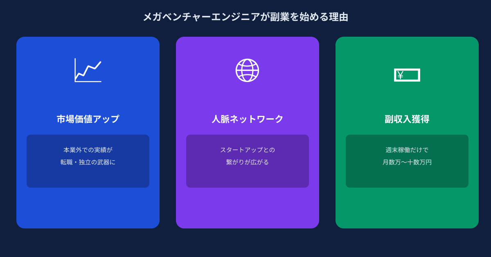
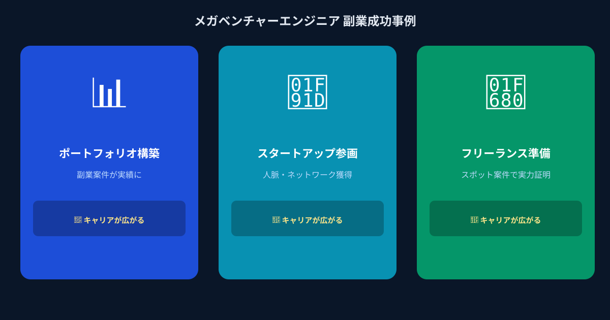

「副業をしない」ことで、気づかずに失っているもの
メガベンチャーや大手IT企業に在籍するエンジニアは、本業の環境に守られているがゆえに、市場価値の変化に気づきにくい側面があります。社内の技術スタックや開発スタイルは組織ごとに固有のものであり、それが外の市場でどれだけ評価されるかを確かめる機会が少ないのが実情です。
副業をしないでいると、失われるのは収入機会だけではありません。「外の発注者に自分のスキルを説明し、成果物として評価してもらう」という経験が積み重なりません。この経験の有無は、数年後に転職や独立を考えたとき、あるいは社内でポジションを交渉するときに、想像以上の差になって現れます。
2026年の市場では、生成AI関連スキルを持つエンジニアへの需要が急増しています。しかし需要があるということは、供給側にも変化が求められているということです。「AIを知っている」という程度ではなく、「AIを使って実際にアウトプットを出した実績がある」エンジニアとの差は、今後さらに開いていきます。スポット副業は、その実績を最小のリスクで積み上げる手段です。
メガベンチャーエンジニアにスポット副業が最適な3つの理由

副業の形はさまざまですが、本業を持つ正社員エンジニアにとって、スポット・タスク単位の副業案件が最も合理的な選択肢です。その理由を3つ整理します。
理由① マイクロコミットで本業への影響ゼロ
スポット副業の特徴は、稼働単位が「週」や「月」ではなく「タスク」であることです。「この画面のUI実装」「このAPIの動作確認とドキュメント作成」「このプロンプトの設計と検証」といったタスクを、土日や平日夜の数時間で完結させる形です。
長期拘束型の副業では「毎週ミーティングに出席しなければならない」「進捗が遅れると迷惑がかかる」という心理的な負荷が生まれます。一方、タスク完結型であれば、自分のペースで集中できる時間に作業し、成果物を納品すれば完了です。本業の繁忙期には案件を休止し、落ち着いたタイミングで次の案件を受ける——このコントロールが利くのがスポット副業の最大のメリットです。
理由② 副業でAI最新技術を実戦投入できる
本業では触れる機会が少ない生成AI・LLM実装の案件は、副業の場でこそ積極的に取り組める領域です。ANKENに集まる発注企業の多くは、ChatGPT API・Claude APIを使った社内ツール、RAGを用いた文書検索システム、業務フロー自動化のAIエージェントといったプロトタイプを「週末スポット」で実現したいと考えています。
このような案件を1〜2件こなすと、履歴書・職務経歴書に書ける「AI実装経験」が具体的な形で生まれます。「LangChainを使ったRAGシステムをスポット案件で構築した」という事実は、社内プロジェクトで同等の経験をするより早く・確実に手に入ります。AIスキルの需要が高いいま、この差は転職市場でも昇進交渉でも明確な武器になります。
理由③ 社外との接点がキャリアの幅を広げる
メガベンチャーに在籍するエンジニアの人的ネットワークは、どうしても同業界・同規模の企業に偏りがちです。副業のスポット案件では、スタートアップ、中小企業、個人事業主など、普段とはまったく異なる規模・文化の組織と仕事をします。
この接点は、単なる収入以上の価値を持ちます。発注者のニーズを理解してアウトプットを出す経験、短期間でゼロから信頼を構築するコミュニケーション能力、社内の慣習に縛られないプロダクト視点——これらは本業の大規模組織では身につけにくいスキルです。数年後に独立や転職を検討したとき、副業で培った社外ネットワークと実績が、その選択肢の広さを決定づけます。
こんなエンジニアが副業で成果を上げています

実際にANKENでスポット副業を活用しているエンジニアの具体的なパターンを紹介します。
本業ではPythonのAPIバックエンドを担当していたが、生成AIの実装経験がなかった。ANKENで週末スポットの「社内文書検索ツール（RAG）の構築」案件を受注し、2週間・土日のみで完成。報酬は12万円。その実績を職務経歴書に加えたことで、その後の転職活動で「AIエンジニア」として評価されるようになった。
週末は家族との時間を大切にしたいため、平日の21〜23時に集中して作業できるタスク型案件を選択。ReactとTypeScriptを使ったUI実装タスクを月1〜2件受け、平均月収8万円の副収入を得ながら、異なる業種の発注者からフィードバックをもらう経験を続けている。本業でのレビュー視点も変わったと話す。
将来の独立を見据え、「まず外の市場で自分のスキルがどう評価されるか知りたい」とANKENに登録。最初は3万円のタスクから始め、8ヶ月で累計6案件・報酬総額約65万円を達成。発注者との直接のやり取りを通じて提案力が上がり、「案件を選ぶ基準が明確になった」と語る。独立のタイムラインを1年前倒しにするか検討中。
副業を始める前に確認すべきこと
副業を始める前に、在籍企業の就業規則を確認することは大前提です。多くのメガベンチャーでは副業・複業を認める方向へシフトしており、2026年現在、厚生労働省のガイドラインに沿って副業を解禁している企業は増加傾向にあります。ただし、競業他社への参加禁止、一定時間以上の稼働制限、事前申請の義務など、条件が設けられているケースは依然として多くあります。
スポット案件であれば稼働時間を自分でコントロールしやすく、申請のハードルも低い傾向があります。「副業に興味はあるが手続きが面倒」と感じている場合でも、「週末2〜3時間のタスク案件1件」という切り口で上司や人事に相談すると、通りやすいことが多いです。ANKENでは案件の規模や稼働時間を柔軟に調整できるため、社内申請に合わせた働き方の設計も可能です。
よくある質問
- Q. メガベンチャー所属でも副業すべき理由は何ですか？
- A. 実践できるAI技術の幅が広がり、市場価値を高められる機会を得られるためです。
- Q. 副業でどんな成果を上げている人が多いですか？
- A. 土日・平日夜のマイクロコミットで、AI案件を通じて新しい技術領域に挑戦している人が多いです。
- Q. 副業を始める前に確認すべきことは？
- A. 就業規則での副業可否と、本業と競合しない案件かどうかの2点を確認すべきです。
まとめ
メガベンチャーや大手IT企業に在籍しているエンジニアは、外の市場から見ると信頼性の高い人材として評価されます。その看板を活かさないまま副業の機会を逃し続けることは、キャリアとしてのリスクになりえます。
スポット案件であれば、週末の数時間から始められます。最初の1件は報酬より「外の市場を体感する」ことに意味があります。AIスキルを実戦で試し、社外の発注者から直接フィードバックをもらい、完成した実績を手元に残す——この積み重ねが、1年後・3年後のキャリアの選択肢を確実に広げてくれます。まず1件、試してみてください。
登録無料・案件は週末・タスク単位からOK。AIスキルを実戦で試しながら副収入を積み上げましょう。
👉 エンジニアとして無料登録する週1日・土日だけ・タスク単位の案件が中心です。まず登録だけでもOK。